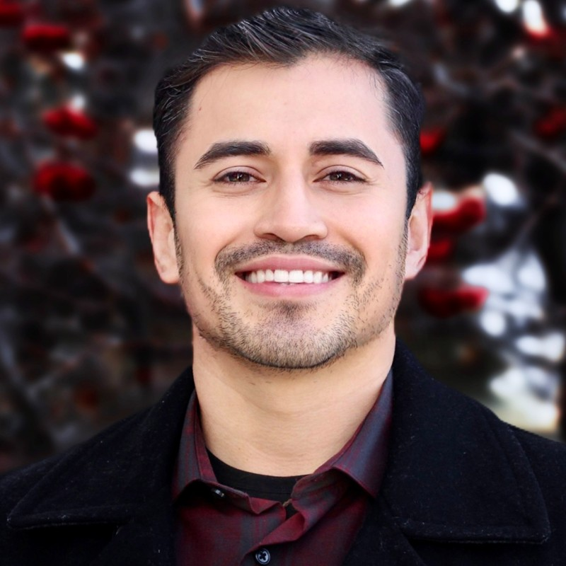
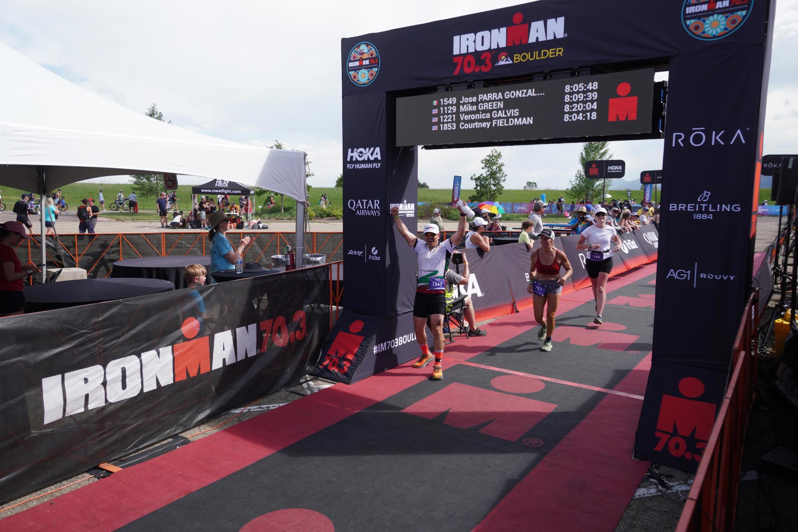
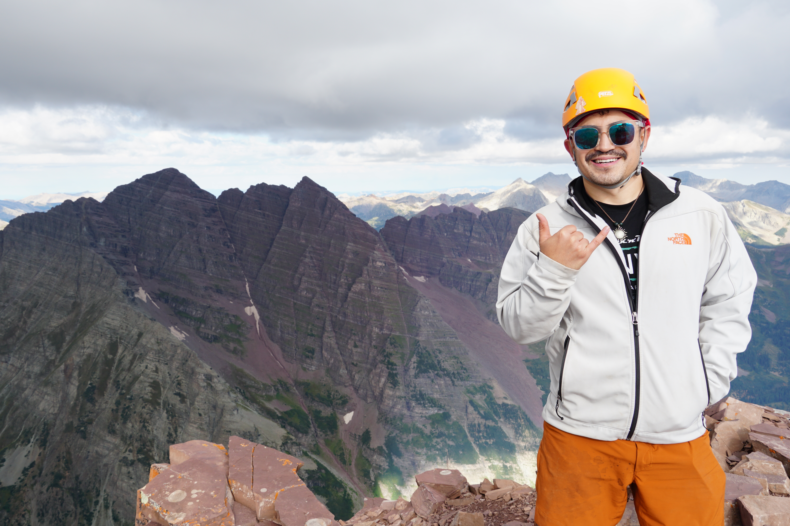
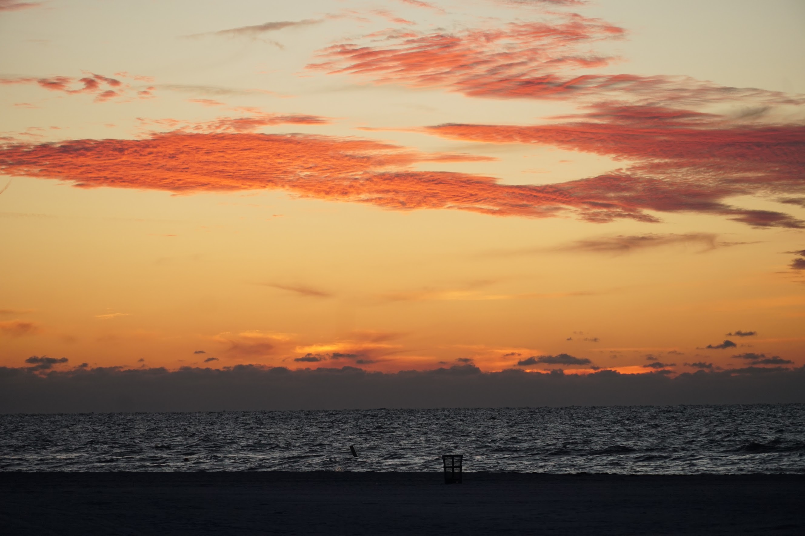
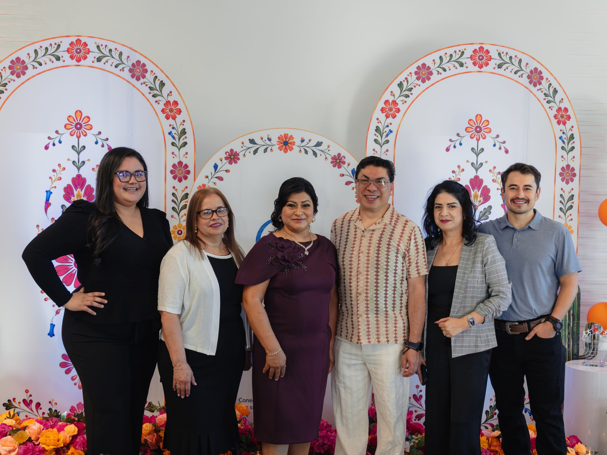

Professional Summary
I am a clinical research professional and public health practitioner with over 10 years of experience in clinical trial operations, research porfolio management, and quality assurance across academic, private, and integrated healthcare settings.
Throughout my career, I have led multidisciplinary research teams, managed complex Phase I-IV clinical trials, and collaborated with investigators, sponsors, and contract research organizations to ensure the ethical, efficient, and high-quality conduct of clinical research. My expertise includes clinical trial operations, regulatory compliance, process improvement, staff development, and research program evaluation and expansion.
I hold a Master of Public Health in Community and Behavioral Health, which complements my clinical research experience and strenghtens my approach to addressing broader population health challenges.
I am passionate about being a part of innovation, translating evidence into meaningful improvements in health outcomes.

Academic History
Master of Public Health
Colorado School of Public Health
Concentration in Community & Behavioral Health
Latino Health Certificate
Colorado School of Public Health
Bachelor of Science
Metropolitan State University of Denver
Major in Biology with a minor in Chemistry
My Interests
Outside of my professional work, I enjoy pursuing activities that challenge me physically and creatively, connect me with nature, and strengthen my connection to the community.

Endurance Sports
Endurance sports provide opportunities to challenge personal limits, explore new places, and connect with others. Having completed multiple marathons and an Ironman 70.3, the next goal is to complete a full-distance Ironman triathlon. Beyond physical fitness, endurance training fosters discipline, resilience, and a commitment to continuous improvement.

Mountaineering
Colorado’s mountains offer many opportunities for adventure, exploration, and personal growth. With 40 of the state’s 58 fourteeners completed, the goal is to summit all 58 peaks. Mountaineering requires careful planning, technical skills, and perseverance, while providing an opportunity to disconnect from daily routines and appreciate the natural environment.

Travel
I like to travel to new places, explore new cities, try different restaurants and food options, and experience different cultures. Particularly, I like places with an ocean so I've been to Hawaii, California, Oregon, Florida, & Texas. I'm looking forward to traveling more outside of the continential U.S.

Family & Community
Family and community are central to maintaining a meaningful and balanced life. Raising a young daughter has brought new opportunities to explore Colorado through family-friendly activities and shared experiences. Having spent most of my life in Colorado, I have a broad social network of family, friends, colleagues, and the broader community and it helps shape a deep appreciation for relationships and belonging.